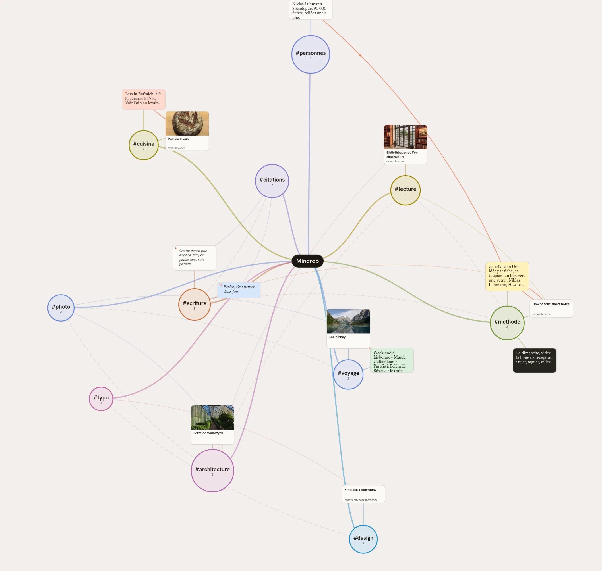

Your second brain, in your browser.
Keep pages, notes and quotes. Link them. Everything stays yours.

One click and it is kept.
- Alt+Shift+S
- The page, a note, your #tags, and the selection as a quote.
- Alt+Shift+D
- The page, saved at once, no window.
- Right-click
- A sentence, a link or an image, from any page.
- The page text
- Kept with it, so search finds the article itself.


Notes that cite each other.
Write [[Title]]: the note links to the other one, and the other one knows who cites it.
Every tag, every link, on one map.
Zoom in and memories come out around their tags. Orange curves are the links between notes.

An AI agent can search it.
A read-only MCP server: tolerant search, page text, links and tags. A switch cuts access.
$ node mcp/install.mjs <extension-id>
$ claude mcp add mindrop \
-- node mcp/server.mjs
tools
search_memories get_memory
list_tags related_memoriesYour notes never leave this browser.
- 100% local
- No account, no server: everything lives in your browser.
- Backed up
- A full copy on your disk after each change, thirty days kept.
- Search that forgives
- Accents, plurals, variants and typos, across the page text too.
- Free software
- AGPL-3.0: read it, change it, share it.
Install it in four steps.
- Download mindrop.zip and unzip it somewhere it will stay.
- Open
chrome://extensions, orbrave://extensions, and turn on Developer mode. - Load it with “Load unpacked”, then pick the
mindropfolder. - Pin the orange icon to your toolbar, then press Alt+Shift+S on a page.